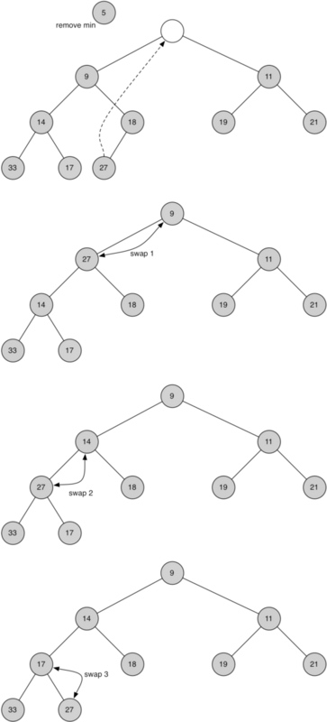

A heap (堆)is a specialized tree-based data structure。 A heap can be classified as either a max heap or a min heap.
- In a max heap, the keys of parent nodes are always greater than or equal to those of the children and the highest key is in the root node.
- In a min heap, the keys of parent nodes are less than or equal to those of the children and the lowest key is in the root node.
Heap is one maximally efficient implementation of an abstract data type called a priority queue (see here), and in fact priority queues are often referred to as heaps, regardless of how they may be implemented.
Implementation
Priority queues typically use a heap as backbone, giving \(O(\log n)\) performance for inserts and removals, and \(O(n \log n)\) to build initially.
Binary Heap
A common implementation of a heap is the binary heap(二叉堆), in which the tree is a complete binary tree(完全二叉树).
二叉堆的操作与实现
BinaryHeap()：创建一个新的、空的二叉堆对象insert(k)：把新元素加入到堆中findMin()：返回堆中的最小项，最小项仍保留在堆中delMin()：返回堆中的最小项，同时从堆中删除isEmpty()：返回堆是否为空size()：返回堆中元素的个数buildHeap(list)：从一个包含元素的列表创建新堆
有两个关键的操作：
1. insert方法。首先，为了满足“完全二叉树”的性质，新键值应该添加到列表的末尾。然而新键值简单地添加在列表末尾，显然无法满足堆次序。所以要通过比较父节点和新加入的元素的方法来重新满足堆次序。如果新加入的元素比父节点要小，可以与父节点互换位置；不断交换，直到到达树的顶端。下图所示一系列交换操作来使新加入元素“上浮”到正确的位置。

2.delMin方法 移走根节点的元素后如何保持堆结构和堆次序: 首先，用最后一个节点来代替根节点, 移走最后一个节点保持了堆结构的性质。这么简单的替换，还是会破坏堆次序。第二步，将新节点“下沉”来恢复堆次序。下图所示的是一系列交换操作来使新节点“下沉”到正确的位置。

class BinHeap(object):
"""
创建一个新的、空的二叉堆对象
"""
def __init__(self):
self.list = [0]
self.size = 0
def perc_up(self,i):
"""
Percolate the new node into proper position
"""
while i:
if self.list[i] < self.list[i//2]:
self.list[i], self.list[i//2] = self.list[i//2], self.list[i]
i = i//2
def insert(self, item):
"""把新元素加入到堆中"""
self.list.append(item)
self.size += 1
self.perc_up(self.size)
def findMin(self):
"""返回堆中的最小项，最小项仍保留在堆中"""
return self.list[1]
def delMin(self):
"""返回堆中的最小项，同时从堆中删除"""
retval = self.list[1]
self.list[1] = self.list[-1]
self.size -=1
self.list.pop()
self.perc_down(1)
return retval
def perc_down(self, i):
"""
Percolate the root node down the tree
"""
while i*2 <= self.size:
if i*2+1 > self.size:
self.list[i*2], self.list[i] = self.list[i], self.list[i*2]
i = i*2
else:
if self.list[i*2] > self.list[i*2+1]:
self.list[i*2+1], self.list[i] = self.list[i], self.list[i*2+1]
i = i*2+1
else:
self.list[i*2], self.list[i] = self.list[i], self.list[i*2]
i = i*2
def isEmpty(self):
"""返回堆是否为空"""
return self.size == 0
def __len__(self):
"""返回堆中元素的个数"""
return self.size
def buildHeap(self,alist):
"""从一个包含元素的列表创建新堆"""
self.size = len(alist)
self.list.extend(alist)
i = self.size//2
while i >0:
self.perc_down(i)
i -= 1